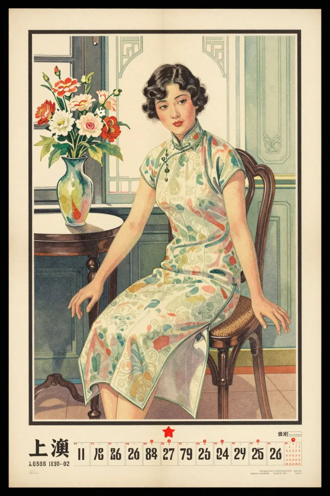

Artists drew a beauty in rubbed charcoal and tinted it with watercolour. Printers copied the result by chromolithography for tobacco, medicine and cloth advertisers. A calendar band runs along the foot.

Core thesis
A calendar that a shop gives away can sell a product through the face of a modern woman, in smooth, warm colour that a lithograph can copy.
Design principles
Draw a young woman, in a qipao or a modern dress, in a fashionable room or garden.
Model the skin with rubbed charcoal and thin watercolour, so the tone is smooth and has no line.
Use hot, soft colour: peach skin, rose red, jade green and gold yellow.
Print a calendar band at the foot, with the months, and put the advertiser name and logo in a fixed place.
Frame the figure with a border of gold or pattern, and add a few props of the new city, such as a car, a radio or a lamp.
Make 4–8 lithographic plates, and print the full set in a large run for the advertiser.
Print on coated poster paper, and keep the register within 0.4 mm.
Anti-patterns
A woodblock line or a folk-print outline
Visible halftone dots, or a photograph
A grunge or distressed surface
Flat vector fill with no skin modelling
A calendar band that is missing or has no advertiser